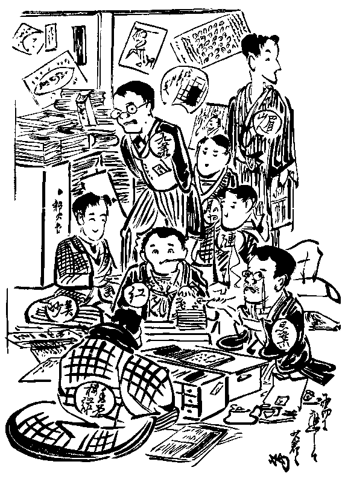

震災で破壊された東京の史蹟のその中で最も
惜まれる一つは
馬琴の
硯の水の井戸である。馬琴の
旧棲は何度も修繕されて
殆んど旧観を
喪ってるから、崩壊しても惜くないが、
台所口の井戸は馬琴の在世時のままだそうだから、埋められたと聞くと惜まれる。が、井戸だから
瓦や土砂で埋められても旧容を
恢復するのは容易である。
この馬琴の硯の水の井戸は飯田町の
中坂の中途、
世継稲荷の筋向いの
路次の奥にある。中坂といっても
界隈の人を除いては余り知る者もあるまいが、
九段の次の険しい坂である。東京のジオグラフィーを書くものは徳川三百年間随一の大文豪たる滝沢馬琴の故居の名蹟としてのこの中坂を特記する事を忘れてはならない。
馬琴は二十七、八歳、
通油町の
地本問屋
蔦屋重三郎の帳面附けをしていた頃或人の世話で中坂の下駄屋で家主なる寡婦の入夫となった。
漸く高名となってからは下駄屋を
罷めて
手習師匠となり、晩年には飯田町の家は娘に婿を取って家主の株を継がせ、自分は
忰宗伯のために買った
明神下の家に移って同居したが、一生の殆んど大部分は飯田町に暮したのだ。
九段の
長谷川写真館の
真向いを東へ下りる坂の下り口の北側が今では
空地となってるが、この空地を
外れて二、三軒目にツイ二十年前まであった小さな瀬戸物屋が馬琴の娘の婿の家で、今でも子孫が
無商売でこの裏に住んでるそうだ。この路次裏の井戸が即ち馬琴の硯の水で、文芸の理解のない官憲も馬琴の名だけは知っていたと見えて、数年前から東京史蹟の高札が建てられた。王侯将相よりも文豪の尊敬される
欧羅巴なら
疾くに日本の名蹟とし東京の名誉とし
将た飯田町の誇りとして手厚く保管し、金石に
勒して永久に記念されべきはずであるが、戦場で拾って来た砲弾の記念碑を建てる事を知っていても学者や文人の墓石は平気で破壊するを少しも怪まない日本では、
縦令高札を建てても
何時この貴い古井戸を埋めてしまわないとは限らない。が、この古井戸がどうなろうとも、この中坂はグレート馬琴が半生を暮した故居の地として永久に記念されべき史蹟である。
不思議にもこの中坂は文豪馬琴の史蹟であると共にまた、明治の文学史に一エポックを作った
硯友社の発祥地でもある。
中坂上の南側に秀光舎という印刷所がある。この秀光舎の前身は同益出版社といって、今から四十年前に小説復刻の元祖たる南
伝馬町の
稗史出版社に続いて馬琴の『
俊寛僧都島物語』や
風来の『六々部集』を覆刻したので読書界に知られた印刷所であった。この工場と
相対ってる北側に、今は地震で
崩されて旧観を
更めてしまったが、附属の倉庫の白壁の土蔵があった。硯友社という小さな標札がこの土蔵の戸口に掛ったのがタシカ明治二十一年夏の初めであった。
尤も『
我楽多文庫』はそれより二タ月前頃から公刊されていたが、飯田町の国学院大学の横町の尾崎の家を編輯所兼発行所としていた頃には誰にも余り知られなかった。人通りの多い中坂上に看板を掛けてから初めて行人の目を
牽いた。
馬琴の
後裔だという瀬戸物屋は
爰から僅か十二、三軒目であった。馬琴が江戸一の作者として盛んに鳴らした頃は手習師匠であったし、家主であったし、殊にあれだけの学問見識があったのだから、馬琴の清右衛門は必ず町内の学者でもあり
口利きでもあったに相違なく、硯友社の札を掛けたあたりは
大方清右衛門の世話になっていたろうと思う。少くも硯友社は馬琴の下駄の
迹を印し馬琴の声を聞いた地に育ったので、幽明相隔つるといえ、馬琴と硯友社とはいわば
大家と
店子との関係であった。
更にこの中坂について
最う一つ記憶すべき事がある。その頃の『読売新聞』の投書欄は当時の唯一の文芸場であって、
前島和橋、
南新二、
琴通舎康楽、
高畠藍泉というような当時の名流が盛んに寄書して紙面を
賑わしていた。
就中、最も軽い
諷喩と円転自在の名文で聞えたのが中坂まどきであって、「まどき」の名は当時の『読売新聞』の読者の間に喧伝された。この「まどき」というは
偕行社の
真裏に当るの
世継稲荷の奥の代用小学校の持主で本名を中川真節といった。「まどき」は最う三十年も前に死んでしまったが、当時の『読売新聞』投書欄の愛読者は今でも「まどき」の名を記憶しているだろう。
「まどき」が盛んに『読売』の投書欄を賑わして殆んど
独擅場の観があった頃、中坂思案外史の名がポツポツ投書欄に見え出した。時としては飯台思案外史とも称していた。「まどき」の老熟には及ばなかったが、折々心憎い事をいうので読者の注意を牽いた。同じ中坂だから「まどき」の
弟分か
弟子じゃなかろうかという
噂もあって、「まどき」の名が盛んなるに
伴れて思案外史の名もまた段々と聞えて来た。
然るに二十一年の五月の末『我楽多文庫』の第一号が創刊されたのを早速買って見ると、その巻頭の辞を書いたのが誰あろう思案外史であった。その頃中坂下に住んでいて朝夕この界隈を散歩した私は馬琴の瀬戸物屋の前を通って文豪を
偲ぶと共に中坂という名に興味を持ち、この中坂を冠する思案外史は中坂の
何辺らあたりに住んでる人だろうと
揣摩し、この思案外史の巻頭の辞を載せた『我楽多文庫』をもやはり中坂に縁があるように思っていた。
すると文庫が創刊されてから二、三カ月目、ふと或る夕方中坂上を


いていると、偶然見附けたのが硯友社の標札であった。硯友社が如何なる人の団体だとも、思案外史が如何なる人であろうとも考えないで、ただ何かなしに
行衛を知らなかった未見の友の
有処を突留めたような気がして会心の微笑を禁じ得なかった。
これより先き数年、今は電車通りの裏となってる
神保町筋の
今川小路に武蔵屋という絵双紙屋があった。その頃は専門の雑誌屋がなくて絵双紙屋で雑誌を売っていた。いたって貧乏なケチな店だったが、『
金毘羅利生記』を出版してマンマと失敗した
面胞だらけの
息子が少しばかり
貸本屋学問をして
都々逸や
川柳の咄ぐらいは出来た。この店先きで折々
邂逅う五分刈の大きな頭の近眼鏡をギラギラ光らした青年があった。いつでもドッカと腰を落付けては
頻りに都々逸や川柳の気焔を揚げていた。
何処の人か知らぬが、雑誌や新刊書を何でも
洩れなく読む人だと感心して、いつでもその気焔咄を謹聴していた。
一度会ったら忘れる事の出来ない特徴のある人だから、その後往来で
摺違う
度にアノ人だなと思った。が、こっちは
能く覚えていても、
先方の眼中には背の低い
児供々々した私が残ってるはずがないから、何度摺れ違ってもツイぞ一度顔で会釈した事さいなかった。勿論、口を利いた事はなお更なかった。
ところがその後、予備門（今の高等学校）の生徒控室でゆくりなくもこの五分刈の巨頭君に
邂逅って、
喫驚して
窃に傍人に
訊いて、初めてこれが石橋助三郎という人であると教えられた。が、これが音に聞く中坂思案外史だとはマダその時は知らなかった。
一体私は
頗る臆病な青年であって、人から話し掛けられれば知らず、自分から進んで口を開く事は決してなかった。それ故、その後何度も顔を見ても、気焔咄を恐る恐る傍聞しているだけで、
益々都々逸や川柳に
精しいのを感服したが、『読売』の投書欄でお
馴染の中坂
乃至飯台思案外史をこの五分刈の巨頭君に結びつけて考える事は出来なかった。その頃は何かなしに新聞に投書でもする人は世故にも
長け文章にも長じた中老人だとばかり思っていたから、中坂思案外史も
伯父さん分に当る年配の人だとばかり信じ切っていた。
『我楽多文庫』が公刊された時、早速買って来て第一に眼に留ったのが思案外史の巻頭の辞であったが、硯友社が私とほぼ同齢の青年の団体だとも、思案外史が二、三年来度々
邂逅う巨頭の青年だとも少しも知らなかった。これを知ったのはそれより二、三年後であって、アレが思案外史かと知った時は
唖然として、道理こそ都々逸に精しい人であると思った。
思案外史はその頃中坂から一丁半ばかり、
富士見町の裁判所の横手の、今は
暁星中学校の構内に
囲込まれた処に住んでいたから、中坂というは少し無理だが、馬琴がしばしば飯台
蓑笠漁隠と称した如くに飯台を
戴く因縁は持っていたのだ。
思案外史の巻頭の辞を
首途の祝言として
鹿島立した『我楽多文庫』は四六倍判十六頁の表紙なしの
畳放しで、今は
廃れてるがその頃
流行った
清朝活字の四号刷であった。無装飾のスッキリした、少しも体裁を飾らない、
微塵も
忌味ッ気がない江戸前の雑誌であって、正札附金三銅が貧乏書生に取っては
殊に
嬉しかった。
一日絵双紙屋の店を
覗かないと気持が悪るかった私は、文庫が店頭に
列んだ当日早速買って来た。全部に若々しい生気が
滔れていたのは何となく共鳴を感じたが、世間を一向知らない私は前にもいう通りこういうものを書く人は皆世の中の
酸いも甘いも
噛分けた中年以上の通人だとばかり
漠然と思って、我々同年配の青年の団体とは少しも想像しなかった。だが、巻頭の辞から広告社告の末まで一字も余さず読んで行く中に、硯友社の社則がその頃の青年の集会の会規と
何処かに共通点があるのを発見して、
朧ろ
気ながらも割合に若い人たちの集団であると気が付いて、どうしてこんな巧い事をいえるだろうと
益々感服した。
硯友社の異宗門たる私は『我楽多文庫』の前世紀の歴史については何も知らないが、第一号の思案の巻頭の辞に
由ると、五カ年以前狂文の
羽檄を四方に飛ばして同好の勇士を狩集めとあるから、私が初めて絵双紙屋の店先きで巨頭の青年思案外史の博覧に驚かされた頃には
最早成立していたのだ。「字は
大篆の読みにくく絵は
丹緑のあどけない」回覧雑誌として第一号を発表したのが明治十八年の五月二日で、九号から謄写版と改めて十七号を重ねたというから、いよいよ街頭に立つまでの陣容を整えるにはかなりの長い準備を要したので、
一と
度起つや
忽ち疾風枯葉を巻くが如くに文壇を
切捲ったのも当然である。
文庫の連名中、思案と共に世間に知られていたのは美妙斎であった。美妙の名は思案のように早くから売れていなかったが、その「武蔵野」は天才の出現のように迎えられた。紅葉もまた『読売新聞』の寄書家の一人であったが、才幹はマダ認められなかったので、三人の社幹の中では美妙斎の名が世間的には最も重きをなした。
が、紅葉の才気は第一号以来の「風流京人形」に早くも現われて、
水際立った文章の
冴えが一段引立って見えた。かつ隅から隅まで
万遍なく行渡った編輯上の努力の跡が
歴々として、一座の総帥たる貫録が自ずから現われていた。
が、一日早く売出していた美妙斎の「情詩人」はやはり一番評判となった。殊に当時の女学生間にはこの
為永を
今様としたような
生温い恋物語が喜ばれて、「わたしの心はこの
胡椒……
噛みくだいて粉にしてかおりを見て下さるなら……」というようなキザな文句が若い女に喜ばれて
暗誦されたもんだ。が、紅葉の努力は
全幅に
滔れていたが、美妙斎の色彩は小説以外には
頗る
稀薄であった。美妙斎が冷淡であった
乎、紅葉が一人で
掻廻していた乎、どっちか知らぬがどの道『我楽多文庫』には美妙斎の気分が少しも現れていなかったから、自然文庫の読者には紅葉の印象が次第に濃くなった。その中に美妙斎はリューマチスと称して第六号からは小説を休載し、その後九号と十一号とにちょっと顔を出したぎりで
何時となく分離してしまったから、美妙斎と硯友社との関係はあった乎なかった乎忽ち世間から忘れられてしまった。
が、美妙斎と思案と紅葉とがそもそもの創立者であったのは第一号に載ってる百名近くの社員の面々が各々紹介者があるに反して、三人に限って紹介者がないのでも明らかである。ツマリこの三人が硯友社の創立発起人でありかつ無限責任者であったが、如何なる理由があった乎して美妙斎は創刊
匆々無限責任を忘れて忽ち分離してしまった。
尤も両雄並び立たずで、紅葉は
本より美妙の指揮を仰ぐを欲しなかったろうし、美妙は一歩を先んじて乗出した一日の長を頼んでいたに相違なく、ドチラにも同感すべき事情があったと思うが、
左に
右く紅葉の政治的才幹が硯友社を結束し、美妙が忽ち
背いて孤立したのが二者の成功を著るしく懸隔さした一つの原因であった。
文庫創刊当時の硯友社員は
殆んど百名近くを算した。その中には一時大阪で盛んに人気を
湧かして
弦斎以後の全盛を極めた
渡辺霞亭の旧名朝霞や、不幸にして早世して今では殆んど忘れられた慶応出身の小説家
井上笠園や、
達摩の
蒐集家として奇名隠れなかった理学士西芳菲山人の名が見える。が、紙面に載ってるのは
尽く匿名だから、誰が誰であるか今では模索しがたい。が、
万更楠の藁人形らしくもなかったので、今なら大方後援者とか維持会員とかいうような連中であったろう。ツマリこういう多数の応援隊を作ってフレエフレエと盛んに旗を振らしたのは紅葉の才幹であって、硯友社がメキメキ文壇に勢力を伸して行ったのはこれらの多数の応援隊の社会的潜勢力に負う処が少なくなかったのである。
が、実際に文庫の編輯に
与かっていたのは
楽屋小説の「
紅子戯語」に現れる
眉山、
漣、思案、紅葉、
月の
舎円、
香夢楼緑、及び
春亭九華の八名であった。漣は紅葉美妙と並んで第一号から小説を載せ、硯友社の
麒麟児たる
才鋒を早くから現わしていた。
が、この八名中、美妙は社幹という条、初めから関係が薄かった。円と緑は余り振わないで殆んど存在を認められなかった。九華は初めの中こそ新体詩を
捻くって、
能く
妖怪を持出すので新体詩壇の
李長吉と同人間に称されていたが、高商卒業後は
算盤が忙がしくなって、
何時の
間にか
操觚を遠ざかってしまった。それ故実際に硯友社の基礎を固めた元勲ともいうべきは紅葉、思案、漣、眉山の四人であって、
水蔭や
乙羽や
柳浪やその他の面々は硯友社の
旗幟が振ってから後に加盟したので、各々一、二年乃至数年遅れていた。
『我楽多文庫』は第十号から
京伝馬琴
種彦らの作者の印譜散らしの立派な表紙が付き、体裁も整った代りに幾分か市気を帯びて来た。が、
尚だ放縦な駄々ッ子的気分が
何処かに残っていたが、第十七号以後ただの『文庫』と改題してからは世間並のただの雑誌となってしまった。我楽多を標榜した頃には我楽多の分子が混っていた代りに生気に
充ちていたが、我楽多を取ってしまってからはキチンと締った代りに市気を帯びて若々しい活気が段々稀薄になった。この『文庫』も一年かそこらで廃刊となり、それから
暫らくしてから『
千紫万紅』という新らしい名で更に発行されたが、この『千紫万紅』は硯友社よりもむしろ紅葉一個の機関であって、編輯から印刷から体裁から全部に渡って紅葉好みの
贅沢な元禄趣味が現われ、内容も一と
粒選で少しも
算盤気がなく、頗る
垢抜けがして気持が
宜かったが、余り算盤気がなさ過ぎて、初めから永続しそうもなかった。果して三、四号で永遠の休刊となった。
この外に文庫の
出店というような雑誌があった。柳浪が主宰した『小文学』と『江戸紫』と、水蔭が編輯した『
小桜縅』であって、いずれも明治二十五、六年頃の発行であった。この『小桜縅』から
田山花袋が出身したは
鶯の巣から
杜鵑が
巣立したようなものだ。
今から顧みるとまるで夢のようだ。若い花々しい火花が出るような元気の紅葉は三十七の壮齢で
脆くも消え、光源氏のように美くしかった紅顔の眉山は
思掛けない悲惨の最後を遂げ、水蔭は芝居と
相撲に隠れ、柳浪は息子さんが
豪くなって楽隠居してしまった。漣は早くから小説の筆を絶ち、
小波伯父さんとなって
揮毫とお
伽講話に益々活動しているが、今では文壇よりはむしろ通俗教育の人である。巻頭の辞を書いた思案外史は早くから表面の活動よりは縁の下の力持の役廻りをして、乙羽なき後の硯友社の総務として『
文芸倶楽部』の一角に巨頭を振っていたが、数年前から
宿痾のために全く文壇を隠退してしまった。
当時の硯友社の生活を知るには『我楽多文庫』の十号から十三号へ掛けて連載された紅葉の「
紅子戯語」を見るに
如くはない。硯友社員も文学を本職とするようになってからはやはり塩酢に追われて、中には随分辛い浮世の塩を
嘗めさせられた人もあったが、その看板を掲げたそもそもの初めは皆学生籍の若旦那株であって、
真面目臭って文学というものの実は道楽であったのだ。第一号の広告面に或る人々の連名で、「拙らへ文芸上に関し御用の諸粋兄は
爾来硯友社へ御文通あられましょうッ、オホン」という広告が載っておる。第三号には、硯友社員ではないらしいが露の屋尾花という人の改名披露が載っておる。「今般去る貴婦人の
需に応じグット
艶ッぽく露の家尾花と改号」云々という文である。先ず万事がこういった
素豆腐式若旦那調子で、雅号を見ても素晴らしいのになると「
唖連美也散生」というような歯の浮くようなのがある。
頭株の数人を除いたら手もなく「
親釜集」連で、今なら葉書集の投書家程度であった。尤もこれらは硯友社員という条、フレーフレーと応援する
旗振連中であった。
が、硯友社を知るにはその頃の文壇の調子を考えなければならない。当時は一切の旧文化が維新の革命で破壊され、京伝や馬琴の流を汲んだ戯作者の残党が
幇間芸人と伍して僅かに
余喘を保っていたのだから、
偶々文学
勃興の機運が熟しても
渠らはその運動に与かる力がなくて、
勃萃無味なる政治小説や半熟未成の翻訳小説の
跋扈するままに
委していた。いわば当時の文壇は何にも知らないシロウトが
白粉を塗って舞台に踊り出し、巡査が人民を
諭すような
口調で女の
声色を
遣ったり政談演説をしたりするようなものばかりで、多少でも文芸の造詣あるものはこの
滑稽な
田舎講談を馬鹿々々しくて聞いてられなかった。硯友社はこういう時代に起ったので、当時の政治家どもが未熟な政治的空想を
捏ちて小説家顔するを
片腹痛く思って、これに反抗して化政度の新らしいレネイサンスの運動を起そうとしたのだ。紅葉が元禄復興を唱えたのは
研鑽の歩を進めた数年後であって勃興当初はやはり化政度の復現であったのだ。
硯友社の調子が初めから如何にも軽くて浮わついて見えたのは、一つは当時文壇に重きをなしたユーゴーやジスレリーの翻訳小説に
馴れた眼で
見較べられたからであるが、一つは硯友社の芸術至上が京伝
三馬系統の化政度戯作者
気質に即して、とかく世間を茶にして
浮世三
分五厘と
脂下るテンと面白
笑止しき道楽
三昧に堕したからである。渠らの把持した芸術至上は必ずしも誤まっていなかったが、新らしい文芸を叫びつつも時代遅れの化政度の戯作者生活をお手本にしたのが誤りであった。尤もその頃は英国文学ですら殆んど理解されていなかった。日本の小説戯曲でさえ京伝馬琴以前は余り読まれていなかった。この時代の硯友社の作風や態度を
仏蘭西や
露西亜の近代作家に対するような心持で批評するのは時代を無視する色盲である。
元来都会生活には今も昔も通有のデカダン気分がある。殊に徳川末季の江戸生活には三百年の太平に
弛緩した
廃頽気分が著るしく濃厚であって、快楽主義の京伝や三馬の生活が遊戯的であったは勿論、道学の
凝まり仁義忠孝の
化物のような馬琴すらも『
仇討義理与犢鼻褌』というような、
外題を見ても内容が察しられる意外の遊戯的な作を何篇も作っておる。この浮世三分五厘と脂下って世間を茶にする江戸作者の
洒落な風は江戸の文化に親しむものの大部分が浸染していたので、
強ち硯友社のみに限らなかった。一と頃根岸党と歌われた
饗庭篁村一派の連中には硯友社に一倍輪を掛けた昔の
戯作者気質があった。今でこそ謹厳方直な道学先生となって門下に煙がられている
坪内博士も、
春廼舎朧時代にはやはりこの気分が濃厚であったのは雅号でも
推量られよう。その頃から露西亜の深酷な
苦鹹の文学を味得して、風采人品からいっても
微塵も
戯作者気のなかった二葉亭でさえも半面にはまたこの気分をかなり多量に持っていた。
看方に
由てはこの遊戯気分が都会文芸の一要素となってるので、
永井荷風や
小山内薫や夏目漱石の
提撕を受けた三田派や人生派の芸術も著るしくこの戯作者的気分を持っている。強ち硯友社ばかりが戯作者風ではなかったのだが、硯友社は思う存分に傍若無人にこの気分を発揮したので、硯友社が
単独で戯作者の
毀を
背負ってしまった。が、この何者にも
制肘されない放縦な駄々ッ子的気分が当時の文学好きの青年の共鳴を
惹くに十分力があった。
「紅子戯語」には当時の硯友社の生活が
活けるが如くに描かれ、幹部の八人の
風
動作が紙上に
躍り出している。若き紅葉の技倆を見るべき傑作の一つであるが、それ以外にこの作はこの理由で後世文学史家の資料とすべき意味深いものである。が、
爰にはこの中の一、二節を引いて記述する
間緩こい
真似をするよりは
手取早く渠らの生活の十分現れてる
松岡緑芽の挿画を示すが
早手廻しである。緑芽もまた硯友社員で当時は仏法科の学生であった。卒業後間もなく、千葉の裁判所に在任中早世して余り現れなかったが、画才があってキャリケーチュアに長じていた。八人の風
が活き活きとして、若い花やかな世間を茶にする気分が全幅に漂うておる。

硯友社の楽屋（劇雅堂緑芽画）
が、その頃の渠らは皆学生籍にあった。この放縦な生活が如何に学校当局者の眼に映じたかは第四号の広告に歴然と現われておる。思案は「この度某学校を退学し以来は専ら文庫の編輯に従事す」と披露し、前記の劇雅堂緑芽と紅葉とは「当号限り退社す」と広告して、編輯人尾崎徳太郎の名を除いた。が、尾崎徳太郎は退社しても紅葉山人は依然社幹の名を列ねて小説を続載していたので、裏面の消息はこの広告の中に明かに読まれた。
判然とは覚えないが、たしか二十三年の春であった。
小石川水道端の
黄鶴楼で硯友社の芝居があった。黄鶴楼というはその頃区長をした小石川の素封家佐藤氏の邸で、氏の子息が硯友社員であった関係から借りたのである。無論、劇についての特別の抱負があったわけでなく、いわば
夷子講の茶番のようなものであったが、
左に
右く文士劇の
先駈をしたので、何事にも新らしい試みに率先した当時の硯友社の意気を
窺う事が出来る。
今なら舞台監督兼作者となったのが水蔭で、一番目の『
積る
怨切子燈籠』という半世話物の
仇討劇も二番目の何とか太平記といった
大塔宮の
吉野落を材とした一幕物も皆水蔭の
書卸しであった。水蔭は舞台監督と作者とを兼ねた上に
尾上江見蔵と名乗って舞台にも登場した。水蔭は今では専門劇作者となってるが、この時分からの劇道熱心家であった。
黄鶴楼の庭前に作った
仮舞台と面して見物席に
充てたのは二タ
間続きの大広間であって、二、三百人のお客がギッシリ
詰った。
森槐南、
依田学海というような顔振れも見えたが、大部分は若い女で、紅葉さん漣さんという
媚かしい
囁※［＃「口＋需」、U+5685、205-5］が
其処にも
此処にも
洩れて、硯友社この夜の人気は当時の花形たる
家橘や
染五郎を圧していた。
その晩の
切が『
花競八才子』という題で、硯友社の幹部の面々が
町奴の
伊達姿で舞台に列んで自作の「つらね」を
掛合に渡すという趣向であった。
花道から八才子が
六方を踏んで現れるという花々しい
出に、どうしたものだかお約束の
素足の下駄
穿きを紅葉だけが紺足袋を脱ぐのを忘れていた。見物席のそこらここらから笑い
私語く声が聞えたが、
有繋は紅葉である、少しも
周章ないで舞台へ来ると、グルリと後ろ向きになって
悠然として紺足袋を脱いだ。「これだからシロウトは面白いよ、」と学海先生は
大に悦に入っていた。
無論
内輪の催しであったが、学海翁が『読売』で劇評を発表したのでパッと評判となって、この次には是非切符を
貰いたいというものが多勢あった。が、それから後は社内の余興的の催しは一、二度あったそうだが、半公開的に
大袈裟に催したのはただ一回ぎりであった。
黄鶴楼劇は前にもいった通り格別抱負があったわけではなかった。が、当時の作者兼俳優兼舞台監督たる水蔭は本より紅葉もまた早くから劇の興味を持っていたので、今に脚本を書く書くと常に
云い云いした。紅葉が今少し長生きしたら小説よりは脚本にヨリ以上成功したろう。最後の落付き場はあるいは劇作家であったかも知れない。
硯友社の世間に乗出したのは『我楽多文庫』であったが、その芸術を認められて文壇の位置を確立したのは『新著百種』であった。
『新著百種』を語る前に先ず発行者たる吉岡哲太郎を紹介しなけりゃならない。吉岡は水産局の技師として十五、六年前に物故したが、東大出身の化学専攻の理学士であった。科学者に似合わぬ経紀の才があって、大学を出ると直ぐ出版業を経営した。吉岡の業績について特記すべきは
“The Student”
の発行である。英語書生
対手の
啓蒙的な語学雑誌であったが、やはり当時の欧化熱が産出したもので、日本人の手に成った外国語雑誌の開山である。一時はかなりな部数が出て、和田垣博士の
赤壁賦や忠臣蔵の英訳が青年読者の評判となった。佐藤
顕理といっても今は余り知る人もなかろうが、一時は英文家として鳴らした佐藤顕理が世間から認められたのもこの雑誌の寄稿で、
安鶴伝というのが取材が面白いので評判された。今では国民競技となってる野球や庭球の方式を当時の高等学校の教師たる英人ストレンジの筆で初めて教えられたのもまたこの雑誌であって、当時の英語書生は皆この雑誌を愛読したもんだ。
吉岡は出版業の
傍ら私立学校の教師をしていた。学校で英文の講義や輪講をしながら生徒に向って、「ただ講義や輪講をしたって詰らんから毎日済んだ処を諸君が代る代る飜訳して見ちゃどうだ。出版すりゃ牛肉ぐらい喰えるぜ、」などといったもんだ。レムゼンの化学を自分で飜訳して自分で出版し、自分の学校の生徒の参考書として売付けたりした。
こういう商売人
肌の男だったから早くも紅葉初め硯友社の奇才に目をつけて『新著百種』を思い立った。尤も初めは政治、宗教、哲学、科学、工芸、美術、何くれとなく多方面に
渉った
叢書を作るツモリで、小説一方と限ったわけではなかったのだ。仮に小説を中心とするにしても各方面の作家を
網羅する計画で、硯友社叢書とするツモリはなかったのだ。が、尾崎の派手な創作が予期以上の人気を博したために自然と尾崎の意見が重きをなして、
何時の
間にか硯友社の機関のようになってしまった。
『新著百種』の第一篇たる『
色懺悔』は紅葉の出世作であった。『色懺悔』以前、紅葉の奇才は既に認められていたが、世間の人気を一時に沸騰さしたのは『色懺悔』であった。欧化主義の反動が文学上にも及ぼして安価なシャボン臭い政治小説や人情小説が飽かれて来た時だったので、『色懺悔』というような濃艶な元禄情味を
滴たらした書名が第一に人気に投じて、内容はさして
勝れたものではなかったが、
味淋と
鰹節のコッテリした元禄
張の文章味が読書界を沸騰さした。さしもに飛ぶ鳥を落す勢いの美妙斎の人気も一時にガタ落ちがして、紅葉
露伴が取ってこれに代ったのは、
畢竟欧化主義と国粋主義との勢力消長に原因しているので、
強ち紅葉と美妙斎との芸術的優勝劣敗ではないのである。
先陣の紅葉が先ず花々しい
勝名乗を挙げたので、『新著百種』は一足飛びに出版界の一枚看板となり、紅葉胸中の
成竹は
漸く熟してこの機を
外さず硯友社の勢力展開の歩を進めた。第二篇の饗庭篁村の『掘出し物』は丁度
新店の
見世開きに
隣家の
老舗の番頭を
傭って来たようなものであるが、続いて思案の『
乙女心』、漣の『
妹背貝』と、予定の如くに第三陣第四陣と順々に
繰出して、盛んに軍容を整えて威武を張った。三国志流にいえば
旌旗林の如く風に飜って
喊声天地に震うというような
凄まじい勢いだった。ツマリ『我楽多文庫』は硯友社の
名題披露の初舞台で、その艶っぽい花やかな元禄張の芸風を示した顔見世狂言は『新著百種』であった。硯友社の基礎はこの『新著百種』で固められた。
『新著百種』について
憶出されるは
薄倖の作家
北村三唖である。三唖は土佐の生れで、現内閣のバリバリで時めいてる
仙石貢の
親戚である。
随って土佐出身の名士には
親昵があったが、文人特有の
狷介と
懶惰とズボラが累をなして同郷の先輩に近づかず、硯友社に投じて紅葉の
庇護の下に『新著百種』の一冊として『石倉新五左衛門』を発表した。
甘ッたるい恋物語で食もたれしている処へ三唖の人を茶にする三馬式の軽い滑稽は餅菓子のあとへ
塩煎餅を出したようなもので、三唖の処女作はかなりに受けた。この
初陣の功名に乗じて続いて硯友社の諸豪と
轡を
駢べて二作三作と発表したなら三唖もまた必ず相当の名を成して
操觚の位置を固めたであろうが、性来の狷介と懶惰とズボラとが文壇にも累をなし、その上に硯友社からは
新参者として
外様扱いされ、紅葉にも余り気に入らないで引立てられなかった。最後が岡山の山陽新報社に口があったを幸いに落延びて、馬骨と改名して田舎新聞に隠れたが、一時馬骨の名が岡山に振ったほど地方新聞小説家としてはかなりに幅を
利かした。が、持って生れた狷介と懶惰とズボラとは
爰でも
永続きがしないで、折角数年の辛抱で築き上げた地方新聞社の位置をも
些細な失敗で
棄てるべく余儀なくされた。それから後は阪神附近をアチコチと流離していたが、ドコにも
容れられないでとうとう九州に渡って別府に
逼息し、生活に
労れた
病躯を
抱えて淋しく暮した。再び上京したらと元気を附けてやった事もあったが、盛返す勇気もなくて
悶々数年の後、
終に大正四年の初冬に別府の同情深い友の家で淋しい敗残者の生涯を終った。三唖は『石倉新五左衛門』一冊の外には中央文壇に何の足跡をも残さないで今では殆んど忘られているが、また明治の数奇伝中の薄倖なる奇才であった。
『新著百種』は薄命なる才人三唖を暗黒なる生涯に送り出すと同時に天才露伴の『
風流仏』を開眼して
赫灼たる前途を
耀かした。露伴の初めて世間に発表した作は『都之花』の「
露団々」であって、奇思
 湧
湧する意表外の脚色が世間を驚かしたが、雄大なる詩想の群を
挺んずるを認められたのは『風流仏』であった。紅葉の『色懺悔』は
万朶の花が一時に咲匂うて
馥郁たる花の香に息の
塞るような感があったが、露伴の『風流仏』は千里
漠々たる広野に彷徨して
黄昏れる時、
忽然薄靄を排して一大銀輪のヌッと
出ずるを望むが如く、また千山万岳の重畳たる中に光明赫灼たる
弥陀の山越を迎うる如き感を抱かしめた。硯友社員に
非ざる露伴の『風流仏』を紹介したのは『新著百種』の最も大なる貢献であった。
巌谷の伯父さんといったらドンナ山の中の
児供でも知ってるが、
漣山人では都会の中学生にも今では通用しない。
独逸から帰って来てからの漣は出山の
釈迦が成覚したように小説家たる過去を忘れてお
伽噺の
小波となってしまった。が、巌谷の伯父さんの出世作は『我楽多文庫』の創刊号から巻頭を飾った「
五月鯉」であった。この「五月鯉」は後に『
初紅葉』という題で単行本として出版されたが、『文章世界』に載せた小波の告白を待つまでもなく、
甕江川田博士の令嬢に対する小波の幼き恋を描いたものであるのはその頃から誰も知っていた。
が、この同じ物語を延長した後談が紅葉の『
金色夜叉』の
藍本であるという説は知らないものがないほど広がってるが実は
誣妄である。『金色夜叉』については小波もしばしば弁明しているし、私も度々紅葉から聞いているが、
唯の発端をこの事実から思付いたという位に過ぎんので、小波をモデルとしたというのは全然虚伝である。が、小波のこの恋物語は硯友社外の私の耳にすらも早くから聞えていたほどかなりに評判されていた。小波の恋が破れて後、その令嬢が縁付いた婚家の近くに住っていた私は時折
美貌を
垣間見、淑徳を聞くにつけて小波のために
頗る同情に堪えなかった。小波は
小皺の寄った今日でも秀麗閑雅を
偲ばせる美男だから、少年時代はさこそと
推量られるので、「五月鯉」の第一回に
梅若丸然とした美少年が荒くれ男に組敷かれる処があるのも大方小波の
好か
稚児時代の自叙伝の一節だろうと想像する。「五月鯉」は傑作というほどのものではないが
無垢なる少年の無邪気な恋を描いたものとしてかなりに評判された。
尤も小波の作はこの処女作に限らず
総て
何処かに
無邪気い処があった。そのくせ風俗壊乱に問われた事が一度や二度でなかったが、根が貴族的に
生立った人だから、材料がいつでも
素直な
温和しい上品なウブな恋であって、深酷な悲痛や
捻じくれたイキサツや皮肉な
譏刺が少しも見られなかった。あくまでも無邪気なお姫様式、若様式のお伽恋物語ばかりだった。
小波がお伽噺に筆を染めたのは随分古い事で、二十一年十二月発行の『我楽多文庫』第十三号から「鬼車」というメールヘンの飜訳を連載したのがそもそもの初めであった。小波の無邪気な筆が恋物語よりはかえってお伽噺に適していたはその頃から見えていた。
が、小波はお伽噺を一生の仕事とするツモリは少しもなかったのだ。それから数年を経、博文館に入ってから『新桃太郎』や『
猿蟹後日合戦』を書き、『少年文学』の第一巻として『
黄金丸』を発表した頃、「漣もお伽噺ばかり書いてるようでは
最うお
終いです、その内には必ず本統の小説を書きます」と、或時私に語った事があった。ところがその頃は筆休めに過ぎなかったお伽噺が予期以上に歓迎され、教育界から
頻りに
頌徳表を
上つられ、四囲の事情もまた風俗壊乱に問われがちな小説を作るを許さなくなったらしく、次第に小説よりはお伽噺に傾いて、独逸から帰朝して以来は終に全くお伽噺に没頭し、著述以外に講演をも初めて通俗教育の
旗幟を建て、博文館を引退してからは文壇よりもむしろ教育界に近い人となってしまった。
漣山人の名は中坂思案外史と共に早くから『読売新聞』の投書欄に見えていた。私が偶然読んで記憶していた手習の説というは漣が最初の投書であって、その時十四歳であったそうな。十四歳初めて新聞に寄書し、十九歳小説を著わし、二十一歳既に一家を成した漣は
稀に見る
寧馨児であった。前にもいった通り、その頃の『読売新聞』の投書欄は当時の名士の論戦場であって、昨年の春
易簀した杉浦天台道士もまた寄書家の一人であったが、或時何かの問題で天台道士と漣と論戦した事があった。その後漣が先生の称好塾に入門してから後、偶然この事が解った時、君が漣山人かと天台道士も意外の感に打たれたそうだ。漣はこういう早熟の奇才子であった。
私が漣に初めて会ったのは二十二年の夏の初めであった。或朝、紅葉を飯田町の三畳の書斎に訪うて話していると、
飄然やって来たのは
飛白の
単衣の
瀟洒たる美少年であって、これが漣であると紹介された時は、
予て若い人だとは聞いていたが、余り若過ぎるので
喫驚してしまった。美妙斎に会った時も意外に若いので喫驚したが、漣の若いには更にヨリ以上驚かされた。漣はその時
二十歳であったが、
精々十八、九ぐらいにしか見えなかった。しかもこの十八、九ぐらいにしか見えない青年が既に一家をなしていたのだから驚かされてしまった。
漣はその時あたかも『新著百種』中の『妹背貝』を書終って、丁度発行所の吉岡書店から原稿料を
請取って来た処だというので、紅葉はソンナラ
午餐を
奢れといい、自分は初対面であったが、三人して上野の精養軒へ行った。電車のない夏の炎天を
壱岐殿坂下まで歩いて紅葉はヨボヨボ
爺さんの二人乗を見付け、
値切倒して私と二人で
合乗して行くと、漣は跡から気の
利いた威勢の
好い一人乗を飛ばして来て
忽ち抜いてしまった。「
此奴、
乗打ちをしたナ、覚えてろ！」と紅葉は手を振上げて打つ
擬をするとヨタヨタ
俥がいよいよヨタヨタした。やがて精養軒の玄関へお
抱え然たる一人乗を横付けした漣が貴公子然と取澄まして俥を下りる跡からヨタヨタ俥を下りて
朴々乎と
従いて行く紅葉と私の二人の
恰好は余り
好い図ではなかった。が、江戸ッ子のチャキチャキたる紅葉は泰然と澄ました顔をして、三人して食堂の卓を囲んだ。隣の卓では若い
岡倉天心が外国人と
相対いに
肉刺を動かしつつ巧みな英語を
滑らかに
操つッていた。
漣は根が
洒落である上に
寛闊に育ち、スッキリと
捌けた中に
何処となく気品があった。殊に応酬に巧みで機智に富み、誰とでも隔てなく交際し誰にでも
能く
親まれた。その上に世を
推移る世才に
長けているから、硯友社という小さい天地にばかり
跼蹐しないで、早くから広い世間に飛出して
 翔
翔していた。一味郎党を堅く結束して鎖国する紅葉は漣のこの世間的態度を内心快からず思ってるように
噂されていたが、漣が硯友社の
凋落した後までも依然として一方の雄を称しておるは
畢竟早くから硯友社
埒外の地歩を開拓するに努めていたからだ。漣は
啻に硯友社のみならず全文壇を通じての第一の才人である。
硯友社は
御大紅葉を初めとし美妙といい漣といい美男のお
揃いであったが、美貌をいったら
川上眉山は第一位であったろう。眉山の美貌は硯友社に限らず、文壇に限らず、美男の畑なる役者の中を尋ねても決して数多くの
匹儔を見出しがたいだろう。尤も美男を定める標準にも色々あろうし、人に
由ての好き不好きもあろうが、如何なる点の
辛い人でも眉山の美貌には百点近くを決して
惜まないだろう。
眉山の色の白さは
透徹るようで、支那人が
玉人と形容するはこういう人だろうと思うほどに美くしく、
何時でも薄化粧しているように見えた。いわゆる女にしても見ま欲しいという
目眩しいような美貌で、まるで
国貞の
田舎源氏の画が抜け出したようであった。難をいったら余り美くし過ぎて、
丹次郎というニヤケた
気味合があった。
最う少し色が浅黒いとか口が大き過ぎるとかいう欠点があったらかえって
宜かったろうと思う。
眉山が予備門（今の高等学校）へ通う時分、その頃は制服がなかったので思い思いであったが、眉山は
何時でも黄八丈の
袂の長い羽織を着ていた。この
媚かしい羽織が女のような眉山の顔と
能く
釣合って、影では
蔭間のようだと
悪語をいうものもあったが、男の眼にも
恍惚とするほど美くしかった。通学の道筋に当る町の若い女は眉山の
往帰りを
楽みにして、
目牽き袖引き
目送って人知れず
焦れていたものも少なくなかったという評判だった。
殊に眉山の
艶容媚態――というと女の形容になるが、その頃の眉山を彷彿するには女の形容を用ゆるが適していた――を著るしく引立たしたのは
春亭九華であった。春亭九華などというと如何にも
柔しげだが、九華は縦も横も
大々した巨漢であった。この九華がクラスの中でも殊に眉山と大の
仲善しであって、学校の往復は本より
何処にでも二人は一緒に
連立っていた。筋骨
逞ましい
大兵肥満の
黒々した巨漢と
振袖然たる長い羽織を着た薄化粧したような美少年と連れ立って行くさまは弁慶と牛若といおう
乎、
髯奴と
色若衆といおう乎。小説でなければ決して見られない図であった。今でも
憶起すと
師宣の絵にありそうな二人の姿を眼前に彷彿する。九華もまた堂々たる風采であったが、眉山が余り美くし過ぎていた。
この平家の
公達のような美少年は早くから知っていたが、この人が眉山人であるとは少しも知らなかった。その後紅葉の家で計らず落合った時、この女のような顔の持主が
也有の再来かと疑われる名文章の作者だと聞いて喫驚してしまった。かつ顔に似合わない思切った皮肉や
毒口を連発するには
呆れてしまった。眉山は遠くから
瞻めてると女のように媚かしいただの色若衆であったが、会って見ると
岩本院の稚児上りといいそうな江戸ッ子風の
伝法肌であった。
眉山の家は
本郷の
春木町の下宿屋であった。学校から帰ると、
素裸になって井戸の水を
汲込みつつ大きな声で女中を
揶揄っていた。真白な肉附きの好い肌が役者のように美くしかったので、近所の若い女が目引き袖引き垣根から
隙見したそうだ。あの下宿屋の
若旦那は役者よりも美くしいと
其処ら
中の若い女が
岡惚れしたという評判であった。
が、眉山の家庭には気の毒な面倒臭い
葛藤が
絶間なかったそうで、
何時でも晴れやかな顔をして
駄洒落をいってる内面には人の知らない苦労が絶えなかったそうだ。
親父が死んでから春木町を去って小石川の
富坂へ別居した。この富坂上の家というは
満天星の
生垣を
繞らした
頗る風雅な構えで、
手狭であったが
木口を選んだ凝った
普請であった。
為永の
中本にある
寮というような
塩梅で、美男であり風雅である眉山の
住居には持って来いであった。が、その頃から眉山は段々と陰気臭く詩人臭くなった。
硯友社員中、眉山は一番詩人らしかった。初めはやはり陽気に騒ぐ
質であったが、次第に段々
沈欝となって、ややともすると考え込むようになった。家庭の事情が面白くなかった処へ自分の力ではとても背負い切れない亡父の債務が
俄に双肩に落ちたからであった。
その頃眉山と私とは家が近かったので、少くも月に一度や二度は互に往来した。が、文学よりは債権債務の法律問題に熱心であって、こういう負債は弁債の義務があるだろう
乎とか、
乃至はこういう督促はどういう風に切抜けたもんだろう乎とかいうような
咄が多かった。今ではその事情は大抵忘れてしまったが、道徳上には何の責任も義務もない夢にも知らない債務を俄に背負わされて、眉山はその弁債方法に
苦んでいた。
こういう家庭に
関聯した道徳上及び物質上の難関に
苦みつつある一方には硯友社よりはむしろ『文学界』同人と
親んで生に
悶ゆる詩人の
艱みに共鳴し、一方にはまた、今は全く
韜晦して消息を絶ってしまったが、
黒川文淵という一種異色ある思想家が同居していて朝夕互に偏哲学を戦わしていた。眉山は最早のんきに
鼻唄を歌う春木町時代の眉山ではなかった。
眉山が
一葉女史との
浮名を歌われたのもその頃であった。この消息については余り
精しくは知らぬが、眉山がしばしば一葉の家に出入したのは事実であって、ツマリ
頻繁な交際と女に好かれそうな眉山の
男振から附会した風説であったろう。が、眉山の美貌はその頃は生活の苦労に傷つけられて幾分か険しくなって来た。
富坂に住んだのはたッた一年かそこらで、眉山は終に債務のために世帯を畳むべく余儀なくされ、
僅かばかりの身の廻りのものを友の家に預けて飄然として放浪の旅に上った。その時の道の記が『ふところ日記』となって後に発表されたのだが、当時の眉山の旅は『ふところ日記』に現れてるような
暢気なものではなかったのだ。
三、四カ月
経ってから眉山が帰って来たと或人から伝言された後、丁度初夏のフラネル時候であった。その頃江戸川
畔に住んでいた私は偶然
川畔を
散策いていると、流れを
下りて来る川舟に
犢鼻褌一つで元気に
棹をさしてるのが眉山で、
吉原通いの
山谷堀でも
下る
了簡で、
胡座をかきつつ
好い気持になってるのが
中村花痩であった。
眉山は三月越しの旅で顔の色が
煤けて日に焼けていたが、真白な長身は汗ばんで赤味を帯び、棹は
上手か
下手か知らぬが流れに従って下りるんだから楽々として如何にも威勢が
好く、とても旅路に放浪して今帰ったばかりの家なき人とは思われなかった。その
艶気のある
勇肌がトンと国貞あたりの
錦絵にありそうであった。眉山の容貌、風采、及び生活は洋画は勿論院派の日本画にもならないので、
五渡亭国貞あたりの錦絵から抜け出したようだった。
「や、乗らないか、」と眉山は私を見るなり声を掛けた。
「僕ン
許へ来い、
美味いものを喰わせるぞ。」
「今行くよ、直ぐ行くよ、」といいながら元気に舟を流して行った。
私の家は
川畔の直ぐ近所だったから、帰って待つ
間もなく、眉山と花痩とは威勢よくやって来た。眉山はその時
新小川町の花痩の家に泊っていたのだ。
中村花痩もまた硯友社の一人だった。最も遅れて加盟したが、伯父さんが俳諧の宗匠だったので俳句には相当に苦労し、俳人としては社中の
指折であった。これも御多分に
洩れないズボラであって、一度は金のために奇禍を買ったので、その後を
潔くする意味で雪後と改称したが、一生借金の苦労に追われて終に名を成す
遑がない中に、夫妻相続いて急性の肺患に犯され、一と月経たぬ間に夫婦とも
鬼籍に入った極めて不幸な作者であった。根が三馬
鯉丈系統の戯作者
肌に出来上った男だから、いつも月夜に米の飯で暢気に暮し、貧乏にも借金にも少しも
怯げずに、執達吏の応接などは手に入ったもんだった。眉山が債権者と折衝するに
方って相談
対手としたのは
専らこの男で、世帯を畳んだ時に身の廻りのものを預けたのもこの男の家なら、放浪から帰ると直ぐ
頼ったのもこの男の家であった。（紅葉が『金色夜叉』を書く時、高利貸の知識や
粉本を借りたのもまた花痩からであった。）
この時は
小一時間も話した。駄洒落で執達吏を
煙に巻く花痩が同席していたから、眉山も元気に
噪いで少しもシンミリしなかった。
間もなく二度目に家を持ったのが
牛込の
北山伏町で、債務の段落が一時着いたというもののやはり旧債に
祟られていた。或時尋ねると、「
昨日は突然差押えを喰って
茶呑茶碗まで押えられてしまった、」と眉山は一生忠実に仕えた
老婢に向って、「オイ
阿婆、
何処かで
急須と茶碗を借りて
来な、」と平気なもんだった。
その頃は
最う眉山も執達吏に
馴れ切っていた。「
身体に附いてるものは押える事が出来ないッてから、今度はピカピカ光る
指環を三つも四つも
穿めて見せびらかしてやろう、」なぞと平気な顔をして笑っていた。が、眉山はかなり長い間債務の交渉に忙がしかったが、ついぞ
服装を
崩さずにリュウとしていた。
何時でも座敷を奇麗に片附け、床の間には幅を掛け花を
活け、庭には植木棚を作って盆栽の二、三十鉢も
列べて置くという風で、儀式張った席へ臨む時は、質屋で
着更えて行くと本人はいっていたが、
左に
右く黒紋付の
対に
仙台平という
拵えだったから、
岡目には借金に
苦められてるとは少しも見えなかった。借金取にも最う慣れ切っていて、貧乏
咄をするにも極めて余裕があって、それほど窮迫しているとは誰も思わなかった。
眉山は酒の上が余り評判が好くなかった。始終眼が充血していて、頭の具合が悪いと口癖にいっていたのもやはり酒のためらしかった。が、この酒は元来好きでもあったろうが一つは生活の不愉快を忘れたさに
益々酒癖を
昂じさせたのであろう。春木町時代に極めて陽気であったのが富坂時代には沈鬱となり、北山伏町時代には
徐々荒んで多少
自棄気味となり、酒のために警察の
厄介になり、警察で演説をして新聞種になった事もあった。
それから後、
南榎町に転じてから今の未亡人を迎えて
沈着いて来た。生活も段々順調となって名声もまた次第に高く、これから新らしい運命を展開しようという処で意外な魔の手は
忽然隕石の如く落下してこの秀麗なる玉人を撃砕した。
あたかもその時私は京都に旅していた。
蒲団着て寝たる姿の東山を旅館の窓から
瞻めつつ、眠ったような平和な自然美をあくまで
貪ぼっていた
長閑な夢を破ったのは眉山の
訃であった。その頃は眉山と私との往来はやや疎縁になって、眉山の近状について余り知らなかったが、が、こういう悲惨な最後を耳にしようとはかつて夢にだも想像しなかった。
眉山が沈鬱となって偏哲学に
耽った富坂時代には時々死を考えた事があったそうだ。死の瞬間は歓喜の美しい飽満であろうと話した事もあった。或時
暗黒の中で
瞑想している
刹那、忽然座辺のものが
歴然と見えて、庭前の松の葉が一本々々数えられたとソムナンビュリストの夢のような事をいったりした。が、夫人を迎えて家庭の
団欒の悦びに浸るようになってからは詩人の夢から
覚めて
頗る平穏堅実となったとのみ聞いていた。
眉山の死の原因について新聞紙は種々の憶測を下して多くは生活難のためといった。が、眉山の生活は豊かでなかったにしろ、自殺するほど
逼っていたとも思われなかった。富坂時代から貧乏線は度々
踰えて借金学も一と通り卒業して来たから、如何に家族を抱えていても死ぬほど窮苦に堪えられなかったとは想像されない。眉山の死の原因を単なる生活難に帰するは決して
穿ち得たものではない。が、原因は何にてもあれ、あれほど豊かな天分才能を持っていながら一生は実に数奇を極めていた。美人薄命というが、
強ち女にのみ限らず、
玲瓏玉の如き美男の眉山もまた頗る薄命であった。
硯友社の勢力は団体的の結束の力であって各自の個々の力ではなかった。紅葉の芸術的天分はエポックを画するだけの十分な力を持っていたが、それよりもなお一層
勝れていたのは
傘下の英才を統率して芸術的地盤を固めた政治的手腕であった。紅葉にもし芸術的天分がなくて政治か実業方面に働かせたなら、社会的にはヨリ以上成功したろう。
紅葉
勃興当時の文壇は各々私交はあっても団体的に行動する事はなかった。
春廼舎の
起つや
半峰居士は
伯牙における
鍾子期の如くに共鳴したが、
早稲田は決して春廼舎を声援しなかった。二葉亭と
嵯峨の
屋とは春廼舎傘下の寒山拾得であったが、その運動は離れ離れであった。美妙は硯友社の一人であったが、
抜駈の功名に
逸って終に孤立してしまった。が、紅葉は早くも孤立の力なきを知って、初めから百名以上の応援隊を率いて起ち、固く結束して団体的に文壇を開拓し、進退
行蔵を
総て
侶にして自家の勢力を扶植した。
当時文壇は全く旧作家に飽いて新作家を迎うるに鋭意していたから、
多士済々たる硯友社は忽ち
章魚の足のように八方に勢力を伸ばし、新聞社に雑誌社に出版人にそれぞれ多少の関係を附けざるはなかった。その上に固く結束して互に相援引し、応援するにも敵対するにも一斉に
起って進退緩急の行動を
侶にした。歩武の整然として訓練の
能く行届いたは
有繋に紅葉の統率の才の尋常でなかった事が解る。硯友社はこの全体の力で常に文壇に
衝ったから、一時硯友社はあたかも政友会が政界に
跋扈したように文壇を
壟断して、
操觚者も出版者も新聞雑誌社も硯友社に
拠らざれば文壇の仕事は何一つ出来ないような形勢となった。当時の硯友社は実に政友会であって紅葉の手腕は
原敬以上であった。
当時硯友社と
相対峙した団体は
思軒、
篁村、三昧、得知ら一派のいわゆる根岸党であった。が、本来根岸党の名は根岸を中心とする文人の一群を
指して他から与えた名称であって、
渠らは折に触れて相集っていわゆる詩酒徴逐の風流に遊んだが、酒を以て集まる無形の交友倶楽部であって、硯友社のような文壇的運動を目的とする団結ではなかった。かつこの根岸党の中心となっているものは大抵旧作家の系統に属し、硯友社に比べては清新の思想と敏活の元気を欠き、文壇の選手権を争うには余りに老成し過ぎていた。
根岸党を外にしては鴎外の『しがらみ草紙』派があったが、この『しがらみ草紙』派は実は鴎外一人であって、その他は興味あれば集まり興味去れば散ずる去就常ならざる遊離分子であった。派という条、実は鴎外が
単独で八人芸をしていたので、弟の
三木竹二の外には鴎外の片腕の指一本の力となるものすらもなかった。
随って個人としての鴎外の権威は認められていても文壇的の実際の運動には全く無力であった。
硯友社の最全盛期は明治二十六、七年頃から三十二、三年頃までだったろう。『読売新聞』を
牙城とした紅葉は
堀紫山を幕僚と頼んで三面及び文芸欄は思うままに主宰した。春陽堂には
前田曙山が座し、博文館には
大橋乙羽が控え、『新小説』も『文芸倶楽部』も硯友社の統轄に帰した。あまつさえ
後藤宙外は早稲田を出ると紅葉
幕下に参じ、硯友社の客将として主宰する『新著月刊』を硯友社の
新版図に献じた。当時の紅葉は四方の
書肆文人来貢すという勢いであった。随って傘下の硯友社員は各々その拠る処を得て勢力を張った。
が、この勢力は他の文人が各々孤立していたと反して団体的に築き上げたのだから、これと
拮抗する他の団体が生ずれば自然に気勢を
削がれるのは当然であった。果然、
万年上田博士が帰朝して赤門派が
崛起すると硯友社の勢威が幾分か薄くなった。続いて早稲田派が新
旗幟を建つるに
到って、硯友社は
復た更に幾分か勢力を削がれた。幸いこの二派は硯友社の秀才に取って代るだけの創作家を出さなかったから当分はなお創作壇の選手権を握っていたが、紅葉門下の
風葉鏡花が
徐々流行児となり掛けた頃には硯友社の勢力は最早峠の絶頂を越していた。それからいくばくもなく紅葉が多年の牙城たる『読売』を
棄てて『
二六』に移った時は、一葉落ちて天下の秋を知るで、硯友社の
覇権がそろそろ
徐々傾き出した。三十六年の冬、紅葉が物故して以来硯友社の団結はまた旧の如くならず、あまつさえ自然主義が勃興して創作の権威が他の集団に移ったので、硯友社は漸次に
凋零して今では全く過去の夢物語となった。
紅葉と私とは二十七、八年頃まではかなり親しくしていた。元来思想上相容れなかったので思想上の
扞格が感情上の乖離となって、一時は交際が殆んど
途絶えていた。が、紅葉と私とは都会育ちの共通の趣味や性格があったので、思想上では相容れなくても紅葉に対しては丁度郷友に対するような親しみを持っていた。それ故論壇では紅葉の態度や硯友社の作風に
慊らないで
忌憚のない批評をしても、私交上には何の隔心も持たなかった。が、紅葉の方ではとかくに疎隔して会えば
打釈けていても内心は敵意を
挟んでいた。
丁度その頃であった。今は殆んど忘れられてしまったが、一時はユーゴーの紹介者として相当に鳴らした
原抱一庵が度々遊びに来た。抱一は好き嫌いの
劇しい感情家であったが、紅葉が大嫌いで、談紅葉に及ぶごとに口を極めて
痛罵するので、その
度毎に、「君は喰わず嫌いだよ。会って見もしないで悪くいう
奴があるもんか。一度会って見ろ、決して
不快い気持はしない、
極捌けた男だよ、」といった。が、何と理解しても抱一は「あんな戯作者輩に会う必要はない、」とばかりいって、尋ねようともしなかった。
すると或時、朝っぱらから飛んで来て、「会ったよ、会ったよ、紅葉に会って来たよ。徳太郎なかなか話せる。
頗る快男子だ。
昨宵は
徹宵話して、二時まで
大気焔を挙げて来た。紅葉は君、実に
豪い。立派な男だ！」
と、今度は
褒めるとも、褒めるとも。余り褒めすぎるので、私が何とかいって
蔑すと、今までと打って変って
反対に、「それは君、君は誤解している。紅葉は

んな男じゃない。君、今度は十分肝胆を
披瀝して話して見給え、」と
俄に紅葉の弁護を
做初した。
紅葉はこういう男で、誰に会っても旧知の友のように
胸襟を開いて歯切れの好い江戸ッ子弁でサックリと竹を割ったように話すから、誰でも快く感じて一見百年の友に接するような心持がした。抱一は放縦と
無検束で人に誤まられたが、根が多感多恨の単純な好人物であったから一見コロリと紅葉に
惚れ抜いてしまった。
嫌いとなると根こそぎ嫌いだが、好きとなると直ぐ
逆せ上る抱一は
矢継早に三、四回も続けて紅葉を尋ねた後、十日ほども
経ってから私の
許へ頗る厄介な提議を持込んで来た。当時抱一は
万朝報社に在籍して
黒岩の秘書のような関係であったが、読売新聞社から紅葉を朝報社へ引抜こうという献策をして、黒岩の内意を
承けてその
斡旋方を私に持込んだ。
当時紅葉は私を忌避してイツ尋ねても居留守を遣い、途中で会っても
碌すっぽ口を利かないという場合であったから、事情を話して私の仲介ではとても駄目だと断わった。が、抱一は何といっても
肯かないで、「自分の口からは言い兼ねるし、自分が言出したのではとても承知しそうもないが君なら必ず紅葉を口説き落せる、」と
頻りに迫って承知しないので、紅葉が読売の待遇に不平である内情も聞込んでいたので、そんなら黒岩と直接談合してからと、抱一と同道して黒岩を訪問し、精しく
招聘の条件を相談してから改めて紅葉に会見を申込んだ。
当時紅葉は私に対して
何時でも不在と称して面会を避けていた。
蛇蝎の如くでないまでも
蚰蜒ぐらいには嫌っていた。その時の返事も突然の会見申込をお辞儀をして原稿の周旋でも頼む用事と
早呑込みしたものと見えて、その頃私が産業界に首を突込み掛けていたので、
夙に実業に雄飛せんとする君がこの
陋巷の貧乏文人に何の求むる事があるかというような頗るイヤ味タップリなものだった。が、会って見れば少しも隔意がなく打解けていた。私は本より論壇の上にこそ紅葉と対敵したが、先方はどうあろうと私交上ではやはり親友のツモリでいたから、胸襟を開いて黒岩の
意嚮を話し、紅葉一身の利害のために黒岩との提携を勧説した。紅葉もまた打解けて少しも
蟠りがなく用件以外の
四方山の
世間咄をしてその夜を
更かした。続いて同じ用件で数回の会見を重ね、或時は家では
沈着いて相談が出来ないからと、半日余りも
旗亭で談合した事もあった。その頃読売新聞の社内の空気が面白くなくて紅葉は不平満々だったから、その頃としてはレコード破りの有利な黒岩の招聘条件に紅葉も一時はグラグラ動揺し、いよいよ日を定めて黒岩と会見する
段取にまでなったが、順序上先ず読売の最高顧問たる
高田早苗に内々打明けた処が、「団十郎はやはり歌舞伎でなければ納まらんので、イクラ給金が良くても公園の舞台で踊っては名が
廃れる」と理解され、九分通りまでグラグラしたが、結局名を
惜んで思い
留る事となって一と先ずこの相談を打切った。が、紅葉の心はその時既に読売新聞社を離れていたので、その時は高田の斡旋で引留条件の花を持たせられて一時中止したが、
終に読売を去るようとなった。
紅葉はこうした男であった。日頃は
罵詈讒謗してやまなかった抱一庵をも一見コロリと感服させ、犬と猿のように
仲違いしているものにでも会えば奥底なく打解けて、自分の身上などを
細々打明けて話すほど
捌けていた。が、心から捌けて
洒落であったかというと実は余り洒落でなかった。
些細な事を
執念く気に掛けて
何時までも根に葉に持つ神経質であった。が、
表面はガラガラして江戸ッ子とアングロサクソンを
搗交ぜた紳士形気を理想としていた。
紅葉は親分肌で、門下や友人の面倒を
能く見た。が、厚意をありがたがって感謝しないと不機嫌だった。殊に門下生に対しては、七尺去って師の影を踏まずというような厳格な奴隷的道徳を強圧した。『
青葡萄』という作に、自分は
鞭と
縄とで弟子を薫陶するというような事をいってるが、門下の中には往来で
摺違った時、ツイ
迂闊して
挨拶しなかったというので群集の中で呼留められて、新兵が古兵にトッチメられるように
威丈高に
叱られたり、正月の年始が遅れたとか近火の見舞をいわなかったとかいうので勘気を
蒙むったりしたものもあった。
門下生ばかりでなく、友人関係の同人に対しても草創時代の同輩は別として、後進生に対しては世話もする代りに先輩の権威で臨んだものだ。北村
三唖が紅葉に
疎んぜられたのも、初めは何かの用事で暫らく
無沙汰をした時、「
少とも顔を見せんじゃないか、
他の家へは行っても
俺の家へは来る
閑はないのか、」と妙な見当違いを
諷てこすられた。三唖も
旋毛の少々曲った
変梃な男だから
嫌気がさして
復た暫らく足を遠のくと、今度は他の家へはマメに出掛けるくせに社のものの方へはまるきり
鼬の道てのは
余まり義理を知らなさ過ぎるぜと、一々不義理を数え立てられてネチネチと油を
搾られた。三唖は紅葉に引立てられたのだから、腹の中では済まないと思ったろうが、
口不調法の男だから
もぞくさして弁解もしなかった、
詫りもしなかった。これが
益々紅葉の気に入らなかった。その上に三唖が
頻繁に出入したのが社外の異宗門だったので、終には
謀叛人扱いされて棄てられてしまった。三唖は紅葉の世話になったという条、『石倉新五左衛門』を認められて『新著百種』に推薦されたというだけであったが、この一篇の原稿の斡旋を永久に徳として弟子の礼を執らなかったのが忘恩者として紅葉の勘気に触れた
所以で、三唖はこれがために紅葉の勢力圏の新聞社や雑誌社からボイコットされてしまった。
乙羽もまた紅葉の世話になった男である。が、乙羽もまた硯友社外の誰とでも交際したのが紅葉の気に入らないで折々
忌味をいわれた。が、乙羽は三唖と違って如才ない利口者だったから、三唖のように紅葉の機嫌を損じるような事は
做なかったし、背後に資本家の博文館を背負っていたから紅葉の方でも遠慮していた。それでも博文館に入ってから一年ほど経った或時、近頃は忙がしくて紅葉さんの
許ばかりへ行ってられないで諸方へ顔を出すので、紅葉さんの御機嫌が悪くて困ると
愚痴を
覆した事があった。
こんな
塩梅に人の世話もしたが十分感謝して自分を立てないと満足しない親分肌通有の欠点をも持っていた。それでも後進生や門下生が帰服していたのは紅葉が文壇に勢力があったばかりでなく、
尋常ならぬ熱情と親切とを持っていたからであった。紅葉は人に
叱言をいう時は涙をボロボロ覆して、これほど俺のいうのが解らないかと泣く事が珍らしくなかったそうだ。この熱情とこの親切とがあってあれだけの門下を養成し、多数の硯友社員を一身同体の如くに率いて活動する事が出来たのであろう。紅葉は
確に人に
長たる親分的性格を
有っていた。
紅葉は常に門下の諸生に対して外国小説研究の不必要を説き、創作家に必要なるは実世間の観察であって外国小説なんぞを読んだって役に立たないといっていた。紅葉門下が
秋声一人を除くの外は皆外国語に
疎そかであったは師家の厳しい教訓のためであった。
が、紅葉自身は常に外国小説を読んで頭を肥やしていた、
就中ゾラの作を愛読して『ムール和上の破戒』の如きは再三反読してその妙を
嘖々していた。『
渠の傑作』を読んだ時はあたかも地方に暮していた私の
許へわざわざ手紙を
遣して盛んにゾラの作意を激賞して来た。『むき玉子』はゾラのこの作から思付いたのである。その外にも外国小説からヒントを得、あるいはそのままに換骨奪胎したものは少くなかった。紅葉は決して外国小説が嫌いではなかった。
私が初めてドストエフスキーの名を聞いたのは紅葉からである。或時飯田町の三畳の書斎を訪ずれると、
昨宵は
嵯峨の
屋が来て『罪と罰』という
露西亜の小説の話をしたが、嵯峨の屋がモグモグしながら妙な手附きをして
咄すのが実に面白かったといった。かつ、この小説は露西亜の近代の最大傑作で、何でもこの頃
丸善へ英訳が来ているそうだといった。その翌日、私は早速丸善へ行って、果して一冊あったのを直ぐ買取った。明治二十二年の春で、後に聞くと三冊来たのを、一冊は坪内博士、一冊は森田思軒、残る一冊を私が買ったのであるそうだ。
が、紅葉は芸術本位であった故、
仏蘭西の写実派には興味を持っても、人生本位の露西亜の小説はジメジメして陰気だと
蔑し、その頃からツルゲネフやトルストイを推奨した私を
外道と呼び、私等の主張した人生のための文学説を
涅
哲学と
嘲っていた。何かというと能く「君らの外道文学では……」などといったもんだ。
私が初めてドストエフスキーの『侮辱』を読んだ時、これなら脚色の山もあるし、常識的な恋物語もあるから、紅葉も必ず感服しそうなものと思って、度々物語の筋や
目貫の個処を話した後に是非読んで見ろといって英訳本を貸した。一と月ほど経ってから読んだかと
訊くと、何だか
質くどくて面倒臭いもんだといって
碌すっぽ読んでいなかった。
三月ほどしてから会った時もやはり読んでいなかった。それから四、五カ月も経ってから或時、
漸と百頁ばかり読んだそうで、女主人公のネルリが朝早く起きてストーヴの前を掃除している姿が眼前にチラチラするような気がしたと言っていた。が、それぎりでとうとう
十月ほどして返して来た時、余り
拗過ぎて我慢にも
読通す気になれない、やはり外道の喜ぶもので江戸ッ子の読むもんじゃアないといった。紅葉は
万更外国文学が嫌いじゃなかったが近代文学には
殆んど同感を持たなかった。
三越で紅葉の真蹟展覧会が
小波その他の主催で開かれてからモウ十年になる。それから以来紅葉の真蹟は
益々持てはやされて今では短冊一枚が三十円以上を値いしてるそうだ。明治の文人の筆蹟では
正岡子規のと夏目漱石のと紅葉のが一番高く売買される。明治の大儒として名声中外に著聞する中村
敬宇先生のよりも、天子の師範として近代の書聖と仰がれる
長三洲先生のよりも、近世の大徳として上下の帰依
篤き
行誡上人のよりも、敷島の三十一文字をもて栄爵を
忝うした
高崎の
正風大人のよりも何らの官位勲爵のない野の一文人紅葉の短冊の方が
遥に珍重されてヨリ高価を以て市場に売買されておる。
数年前、或る書画商の店に書画
帖の売物があった。その中には漢学者では
息軒、
鶴梁、
宕陰、詩人では五山、星巌、枕山、湖山、画家では老山、柳圃、晴湖等その他各方面の一流の近代名家の
揮毫があって、一枚々々随意のものを
剥がして売っていた。ところが誰のよりも数倍高価である紅葉の色紙が誰のよりも一番早く売れてしまったそうだ。
紅葉は死ぬ前に盛んに短冊を書いて、「俺の字は死ぬと値が出るぞ」といって人に与えたそうだが、果して自信の通りであった。
尤も紅葉は書が巧みであったし、人気が盛んであったから早くから筆蹟が珍重された。今から三十年も前、或る懇意な田舎の素封家に所望されて名士の手紙を十数通与えたところが、一年ほど経って偶然その家を訪問した或る男から、私に
宛てた紅葉の手紙が
錦襴表装の軸となって床の間に掛けてあったと知らせて来た。間もなくその素封家から「紅葉先生と露伴先生のだけは早速表装しました、お
庇で自慢の家宝が二幅
出来えました、」と、
慇懃な礼手紙が来た。これほど熱心な崇拝家があろうとは思掛けなかったので、早速紅葉にその話をすると、その頃の紅葉はまだ若かったから
嬉しそうな顔をして、「ありがたいネ、お礼に
藤村の
羊羹でも贈ろうか、」といって笑った。が、今では紅葉の手蹟を立派に表装して伝家のお宝物のように秘襲するものは決して少なくないだろう。
これも数年前の
咄、日本橋の或る
骨董屋に紅葉の手紙を表装した額面が出ていた。宛名はツイその近傍の著名な
書肆で、「
先達ての○は何々へ届けてくれ、本人が義務を怠たったら自分が返債する」という罪な文面だ。何々というはズボラで通ってる門生で、原稿引当ての前借を紅葉が
口入したものらしい。こういう書面を、当の書中の本人がマダ健在であるのに、
苟にも書肆たるものが
他事に渡すというは
怪しからん話で、あまつさえ額面に表装するというは言語道断である。が、それは
左も
右くもとしてこの額面の正札が、驚く
勿れ、金六十八円
也とある。イクラの前借を申込んだか知らぬが、多分この正札の額よりも少なかったろう。ツイこの頃の大阪の柳屋の目録にも紅葉の不養生訓という自筆の原稿が載っておる。どんなものか知らぬが弐百五拾円という
突飛な価には驚かされる。紅葉の人気の高いのはこれを以ても証される。
明治の文人の全集中、漱石全集の予約高は近頃群を抜いてるそうだが、紅葉全集の既刊部数も恐らくこれに劣らないだろう。全集ではないが、『金色夜叉』の如きは何度重版しても足りないで、毎年の出版部数が今だに相当な高率を維持しているそうだ。実をいうと『金色夜叉』は最初の構想が中途で何度も変って
纏まりが附かなかった未成品であるが、真珠の
頸飾の
断れたのを
南京玉で補ったような続篇が二つも三つも出来て、芝居は勿論、活動写真ともなれば
流行唄ともなり、中学校の国文教科書にも載れば絵葉書にも発行され、今ではどんな田舎の片山里でも『金色夜叉』の名を知らないものはない。お
伽噺の外には何にも読まない小学校の
児供ですらが『金色夜叉』の名だけは知っておる。
芥川龍之介や
谷崎潤一郎や
菊池寛や
倉田百三や
賀川豊彦の新らしい作を
読耽るものもやはり『金色夜叉』を反覆愛読しておる。
今村清之助は常に紅葉の作を愛読していたが、感服の余りに一夜
旗亭に紅葉を招いて半夜の清興を
侶にしたそうだ。
西園寺公も誰のよりも紅葉の作を一番多く読んでおられるようだ。今では政治家や実業家の中にもかなりな文芸の理解者があるらしいが、紅葉の小説はその頃からして奥さんやお嬢さんばかりでなく、紳士にも学生にも宗教家にも教育家にも有識者にも無知文盲の俗人にも読まれた。
弦斎や
春葉の作は広く読まれたにしても、その範囲は低級者に限られて高級知識階級に及ばなかった。紅葉のはこれに反して高級者にも低級者にも学者にも無学者にも男にも女にも愛読された。新らしい文芸家の中には最高文学は低級者には理解されないものと独断して、読者の少数階級に限られるを高しとするものもあるが、最大なる文学は高級者にも低級者にも等しく同感される普遍の興味を持ってる。トルストイやドストエフスキーは決して高級の知識階級者にのみ読まれるのでなくしてかえって文盲な農民間にヨリ多く愛読されてる。換言すれば人気ある作家を直ちに目して最大作家とする事は出来ないが、最大なる作家は多くの場合大抵人気がある。紅葉がトルストイやドストエフスキーのような最大作家であったか否かは別問題であるが、普遍の興味を持つ点では
遥に今日の新らしい作家に
勝っておる。
紅葉の病気が重態であると新聞紙に伝えられてから間もなく、或日の午後、私があたかも丸善の事務室に居合わした時、紅葉さんがお見えになりましたと一店員が知らして来た。重態の病人が自身に来るはずはないから、紅葉の使いのものか、さなくば尾崎違いであろうと
訝かりながら店へ出て見ると、
痩せ衰えた紅葉が
書棚の前で書籍を
漁っていた。
余り意外だったので、
狐に
魅まれたような心地がして
暫らく離れて立って見ていると、紅葉は
偶っと
顧盻いて気が付いたと見えてニッと微笑した。
「どうしたい！」と私は
束々と進んで、「
先アこっちへ来給え、」と応接へ案内し、卓を
央に
相対いとなるや、「大変悪いように聞いたが、能く出て来られたネ！」
「本統に悪いんだよ、」と紅葉はニッと笑いながら、血の
気の
失せた
削ぎ落したような
頬を
掌で
扱下しつつ、「寿命は
最う
定ったんだが、元気はマダこの通りだ。」
「何しろ結構だ。
爰まで出て来る元気がありゃア、医者は何といっても大丈夫取返しは附くよ」と元気づけつつ顔を見ながら、「思ったほどに痩せないナ。」
「顔だけ見ているとそうでもないが、
裸体になると
骸骨だ。
股なんか
天秤棒ぐらいしかない。能く立ってられると思う、」と大学で
癌と鑑定された
顛末を他人の
咄のように静かに
沈着いて話して、「人間も地獄のお迎えが
門口に待ってるようになっちゃ最う
おあいだだ。
所詮死ぬなら羊羹でも、
天麩羅でも、思うさま食ってやれと
棄鉢になっても、流動物ほか通らんのだから、
喰意地が張るばかりでカラキシ
意気地はない。
先ア餓鬼だナア！」
と、淋しい微笑を浮べた。
壮健な時と同様にガラガラしていたが、
底力が抜けていて、一緒に声を合わして笑う事が出来なかった。
やがて
間を
措いて、「何を買いに来た！」と
訊くと、「『ブリタニカ』を予約に来たんだが、品物がないッていうから『センチュリー』にした」といった。（『ブリタニカ』と『センチュリー』とを同時に提供していた時で、丁度『ブリタニカ』が品切れになっていた時であった。）
「『センチュリー』を買ってどうする？」と
瀕死の病人が高価な辞書を買ってどうする気かと不思議でならんので、「それどころじゃあるまい、」というと、
「そういえばそうだが、評判は
予て聞いてるから、どんなものだか
冥土の
土産に見て置きたいと思ってネ。まだ一と月や二タ月は大丈夫生きてるから、ユックリ見て行かれる。」
「そんなら『ブリタニカ』にしたらどうだ。最う二タ月も経てば荷が着くから、今予約して置かんでも着いた時に知らせよう……」と、実は私の内心では、余り豊かでもなかろうに、見す見す余命いくばくもないのが解っていながら
んな高価な辞書を買うでもあるまいと、それといわずに無益の
費えをさせたくないと思っていうと、
「そうさナア、」と暫らく考えていたが、「二タ月ぐらいは大丈夫と思うが、いつ
何時どうなるか解らん。二タ月先きに本が着いた時、幸い息が
通っていたにしてもヒクヒクして最う眼が見えないでは何にもならない。」
「大丈夫、大丈夫。その元気ならマタ一年や二年は大丈夫。字引はどうでも
好いが、病気の方は大丈夫だよ。今から
んな
弱音を吹くのは愚だ。きっと
癒ると思わにゃ駄目だ。」
「愚でも駄目でも仕方がない。医者が
三月と宣告したんだから、
力んでも
踏反り返っても三月経てばゴロゴロッと
痰が
咽喉へ
引からんでのお
陀仏様――とこう覚悟して置かにゃ
虚偽だよ、」と
片頬に
笑を含みつつ力の抜けた
空元気で、「そこは大悟徹底している。生延びようとは決して思わんが、欲しいと思うものは頭のハッキリしている
中に自分の物として、一日でも長く見て置かないと執念が残る。字引に執念が残ってお化けに出るなんぞは男が
廃らアナ！」と力のない声で
呵々と笑いながら、「『センチュリー』なら直ぐ届けられるだろう。」
「むむ、『センチュリー』なら直ぐ届ける、」というと、
漸く安心したような顔をして、「これで
先ア冥土へ好い土産が出来た、」と笑いながら丁度店員が応接室の外を通ったのを呼留めて申込書と共に百何円の現金を切れるような
紙幣で奇麗に支払った。
それからかれこれ
小一時間も
悠然と腰を落付けて久しぶりで
四方山の話をした。紅葉と私とは妙なイキサツから
気拙くなっていたが、こうして
胸襟を開いて語ればお互に何の
蟠りもなく打解ける事が出来た。が、最早余命の
定った
渠、再び快く語る機会は恐らく最う与えられまいと思うと何となく名残が惜まれ、最後の会食を一緒にしたいような気がしたが、病気が病気だからそれもならず、
壮健の時と同じように平気な顔をして談笑していても
自ずと憂愁に閉ざされて話を途切らしがちだった。
「あア、あア、」とやがて
平手で左の肩を
叩きながら、「何しろ流動物ばかりだから、腹に
堪えがなくて
直き
労れる。カラキシ意気地がなくなッちゃった。」
といいつつ
椅子を
起ったので、一緒に席を離れて淋しい
後影を店先まで送り出した。
「じゃア君、頼むよ、一時間でも早く届くように。」と待たして置いた
俥に乗移って、「
片脚棺桶に掛ってるんだから気が短かくなった。」
と、病み衰えた顔に淋しい微笑を浮べ、
梶棒の上ると共に互に黙礼を
換して
訣れた。暫らくは涙ぐましく俥の跡を
目送ったが、これが紅葉と私との最後の
憶出の深い会見であった。
それから二タ月ほど経って、いよいよ重態となったと聞いて
門口まで見舞に行ったが、その時は最うドッと
枕に
就いて普通の見舞人には面会を謝絶していた。
間もなく紅葉の
訃は伝わって、世を
挙ってこの
比い少ない天才の
逝くを痛惜したが、訃を聞くと直ぐ、私は弔問して亡友の遺骸に
訣別を告げた。晩年暫らく
相乖離していたのを衷心遺憾に思いながらも、最後の会見に釈然として何も
彼も忘れ、笑って快く一時間余りも隔てなく話したのは
切めてもの
心遣であった。が、暫らく交際が途絶えていたので、硯友社同人や門下の人々は私の
許には死亡の通知さえ
遣さなかったが、永眠する前
三月に紅葉と笑って最後の訣別を叙した私は、
如何に疎隔していても紅葉を親友の一人と見ていた。
だが、自分の死期の迫ってるのを十分知りながら余り豊かでない
財嚢から高価の辞典を買うを少しも惜まなかった紅葉の最後の逸事は、死の瞬間までも知識の欲求を決して忘れなかった紅葉の器の大なるを証する事が出来る。この紅葉の最後の
頁を飾るに足る美くしい逸事は誰も知らぬと見えて誰の口からも世間に伝わらなかった。
紅葉は決して豊かでなかった。先年或る雑誌に、紅葉は生前三円五十銭の画だか骨董だかを買えなかったほど窮していたという逸話が見えた。紅葉は
豈夫に三円五十銭やそこらのものを買えないほど窮していなかったが、こういう馬鹿々々しい誤聞が伝わるのも
万更でないほど切詰めた生活であった。
然るに不起の病に
罹って、最早余命いくばくもないのを知りつつも少しも
紊れないで、余り余裕のない
懐ろから百何十円を支払って大辞典を買うというは知識に渇する心持の尋常でなかった事が想像される。あるいは最後の床の上で、『ノートル・ダーム』の翻訳を
推敲していたからであったかも知れないが、それならばなお更、死の
淵に
瀕してすらも決して
苟且にしなかった製作的良心の盛んであったを知るべきである。
普通ならば医者から三月しか寿命のないのを
申渡されて死後を覚悟すべき時である。
聊かでも余財があれば家族のために残して置く
乎、さらずば自分のための養生喰いをする乎、病気のために食慾の満足が得られないなら慰みになるものでも買うのが普通である。病気のためにも病床の慰みにも
将た
又死後の
計の足しにもならないこういう高価の大辞典を瀕死の
間際に買うというは世間に余り聞かない
咄で、著述家としての尊い心持を最後の息を引取る瞬間までも忘れなかった紅葉の最後の逸事として後世に伝うるを値いしておる。
有体にいうと、私は紅葉の著作には世間が騒ぐほどに感服していなかった。その生活や態度や人物にも
慊らなく思う事が多かった。私が文学のためというよりは実は紅葉のために常に苦言を反覆したのは
畢竟紅葉の才の凡ならざるを惜んで玉成したかったためであるが、これがために紅葉から含まれて心にもなく
仲違いするようになった。が、瀕死の瀬戸際に臨んでも少しも
挫けなかった知識の向上慾の盛んなるには推服せざるを得なかった。紅葉は真に文豪の器であって決してただの才人ではなかった。
（大正十四年三月補訂再記）